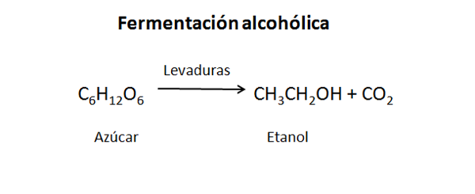

Bienvenido a la Biblioteca de Bartender's Wiki, tu recurso para explorar el fascinante mundo de la coctelería. Aquí encontrarás información sobre historia, recetas oficiales de la IBA, definiciones clave, eventos y mucho más.
Explora nuestras secciones para aprender sobre:
Historia: Descubre los orígenes de los cócteles y la evolución de la cultura del bar.
Recetas IBA: Consulta las recetas oficiales de la International Bartenders Association, la guía definitiva para los cócteles clásicos.
Definiciones: Familiarízate con la terminología utilizada en el mundo de la mixología.
Otros: Encuentra información adicional y curiosidades relacionadas con la coctelería.
Selecciona una sección y comienza tu viaje en el mundo de los cócteles.
Versión 1.8
Orígenes de la Fermentación en la Naturaleza. La fermentación es un proceso natural presente mucho antes de la aparición del ser humano. Las levaduras, microorganismos responsables de la fermentación alcohólica, existen en la naturaleza y pueden fermentar frutas de forma espontánea.
Primeros Indicios de Cerámica (China): "Hallazgos de cerámica rudimentaria en China, posiblemente utilizada para cocinar."
Domesticación del Higo: "El higo se convierte en uno de los primeros árboles frutales domesticados.""
Domesticación de los Cultivos Fundadores: "En el Creciente Fértil se domestican los primeros cereales (trigo, cebada) y legumbres (lentejas, guisantes), dando inicio a la agricultura."
Desarrollo de Cerámica para Contener Líquidos: "En el Neolítico, se desarrolla la cerámica en diversas regiones del mundo, incluyendo China, con vasijas diseñadas para almacenar y transportar líquidos, incluyendo posibles bebidas fermentadas."
Domesticación del Arroz y Primeras Bebidas Fermentadas en China: "En China se domestica el arroz y aparecen las primeras evidencias de bebidas fermentadas a base de arroz, miel y frutas (Jiahu)."
Primeros Indicios de Viticultura y Vinificación en Egipto: "Durante el Período Predinástico, se encuentran las primeras evidencias arqueológicas de viticultura y producción de vino en el antiguo Egipto, con hallazgos en yacimientos como Tell Ibrahim Awad y Tell el-Fara'in. Alrededor del 3000 a. C. existen representaciones del prensado de uvas."
En China Producción de Alcohol de Cereal y Uso de Bronce: "Durante la dinastía Shang, se produce hidromiel y vino de arroz, utilizando vasijas de bronce para rituales."
Producción de Cerveza a Pequeña Escala: "En la Grecia micénica, se produce cerveza a partir de trigo y cebada, utilizando técnicas de fermentación rudimentarias."
En India referencias a Bebidas Fermentadas: "Textos védicos hacen referencia a bebidas fermentadas como 'sura' y 'soma', que podrían haber incluido cereales."
Europa Central (Desde tiempos prehistóricos): Aguamiel y Cerveza de Cebada: "El consumo de aguamiel y cerveza de cebada está bien establecido en Europa Central desde tiempos prehistóricos. Para el 1000 a. C., estas bebidas forman parte de la vida cotidiana y las prácticas culturales."
Reino de Kush (~1000 a.C. y posteriores): Cerveza de Sorgo en Rituales: "En el reino de Kush (Sudán), la cerveza de sorgo se utiliza en rituales y ceremonias. Esta práctica continúa durante el período de florecimiento del reino."
Posible Producción Temprana de Chicha en Mesoamérica: "Si bien la evidencia arqueológica directa es limitada para esta fecha, es plausible que se produjera chicha en Mesoamérica alrededor del 900 a. C., considerando la larga tradición del cultivo del maíz y la práctica de la fermentación en la región."
India y Pakistán (~500 a. C.): Posibles Precursores de la Destilación: Existen textos antiguos que describen técnicas que podrían interpretarse como precursores de la destilación, aunque la evidencia arqueológica concluyente es limitada para esta fecha.
Grecia (Siglo V a. C.): Comercio Extendido de Vino: El comercio de vino florece en Grecia, con exportaciones a diversas regiones del Mediterráneo.
Grecia (Finales del Siglo V - Principios del IV a. C.): Hipócrates y Uso Medicinal del Vino: Hipócrates utiliza el vino como base para preparar remedios medicinales en Grecia.
Egipto (~500 a. C. y anteriores): Consumo de Cerveza y Posible Uso de Hierbas: El consumo de cerveza está bien establecido en Egipto, y es posible que se añadieran hierbas para saborizarla o con fines medicinales.
Egipto y Grecia (Desde tiempos antiguos): Uso Ritual de Bebidas Alcohólicas: Tanto en Egipto como en Grecia, las bebidas alcohólicas tienen un papel importante en rituales religiosos y ceremonias, como lo demuestran diversas fuentes iconográficas y escritas.
Expansión del Comercio de Vino en el Mediterráneo bajo el Dominio Romano: "El comercio de vino se expande significativamente en el Mediterráneo a medida que la influencia romana crece, creando una gran demanda de vino en todo el Imperio."
Introducción de la Viticultura Romana en Algunas Regiones de Alemania: "Los romanos introducen el cultivo de la vid en algunas zonas de la actual Alemania, principalmente en las regiones del Rin y el Mosela, durante su expansión en la región."
Desarrollo de la Viticultura en la Galia (Francia) y su Consolidación como Región Productora: "Bajo el dominio romano, la viticultura se desarrolla extensamente en la Galia, convirtiéndose en una importante región productora de vino dentro del Imperio."
Cultivo de Caña de Azúcar en Asia: "La caña de azúcar se cultiva en diversas regiones de Asia, incluyendo India, desde mucho antes del 100 d. C."
El Pulque en Mesoamérica: "En Mesoamérica, desde tiempos prehispánicos (probablemente incluso antes del 200 d. C.), se practicaba la fermentación del aguamiel extraído del maguey, dando origen al pulque, una bebida fermentada tradicional. El pulque no es un destilado."
Contribuciones de María la Judía a la Destilación: "En Alejandría, María la Judía, una de las primeras alquimistas conocidas, realizó importantes contribuciones al desarrollo de la destilación, incluyendo mejoras en el diseño de los alambiques (como el tribikos) y la invención del baño María. No inventó la destilación como tal, pero sus aportes fueron fundamentales para su posterior desarrollo." Información Adicional Relevante: El término "alambique" proviene del árabe al-anbiq, lo que refleja la importancia de la alquimia árabe en la difusión y perfeccionamiento de este aparato. La destilación jugó un papel crucial en el desarrollo de la química, la perfumería y la producción de bebidas alcohólicas.
Introducción de la Caña de Azúcar en el Norte de África y el Mediterráneo por los Árabes: "Durante la expansión del Islam y el auge del comercio árabe, la caña de azúcar se introduce en el norte de África y regiones del Mediterráneo, impulsando su cultivo y procesamiento en estas áreas."
Las Tabernae Romanas: "Durante el Imperio Romano, las tabernae florecieron como establecimientos que ofrecían bebidas (cerveza, vino, etc.), comida, alojamiento y eran importantes centros de encuentro social. Eran precursoras de las tabernas y bares modernos."
Evolución de las Tabernas en España: "En España, alrededor del año 1080, los establecimientos que vendían bebidas y otros productos evolucionaron, incorporando mostradores que fomentaban el consumo en el local y convirtiéndose en importantes lugares de reunión. Este período marca la transición de las tabernae romanas a las tabernas medievales, con nuevas influencias culturales."
Primeras Evidencias de Consumo de Café en Yemen: Si bien la leyenda de Kaldi sitúa el descubrimiento del café mucho antes, las primeras evidencias confiables del consumo de café como bebida datan de mediados del siglo XV en Yemen. Se sabe que se utilizaba en monasterios sufíes para mantenerse despiertos durante las oraciones. Por lo tanto, situarlo entre 1450 y 1500 d.C. es una aproximación razonable.
Apertura de las Primeras Cafeterías ("Qahveh Khaneh"): "A mediados del siglo XVI, el café llegó a Constantinopla desde Yemen y se abrieron las primeras cafeterías, conocidas como 'qahveh khaneh'. Estos establecimientos se convirtieron rápidamente en importantes centros sociales y culturales, donde se socializaba, se jugaba, se escuchaba música y se debatían diversos temas. Se les conocía como 'escuelas del saber' debido a su papel en el intercambio intelectual." Información Adicional Relevante: Expansión del Café en el Imperio Otomano: Desde Constantinopla, el consumo de café y la apertura de cafeterías se extendieron por todo el Imperio Otomano, llegando a ciudades como El Cairo, Damasco y otras. Influencia en Europa: Las cafeterías otomanas influyeron en la posterior aparición de las cafeterías en Europa en el siglo XVII, que adoptaron muchas de sus costumbres y funciones sociales.
Expansión del Café en el Mundo Islámico: A lo largo del siglo XVI, el consumo de café se extendió rápidamente desde Yemen a otras partes del mundo islámico. Se abrieron las primeras cafeterías (conocidas como qahveh khaneh) en ciudades como La Meca, El Cairo y Estambul. Estas cafeterías se convirtieron en importantes centros de encuentro social, político y cultural.
Llegada del Café a Europa: El café llegó a Europa a principios del siglo XVII, principalmente a través de comerciantes venecianos. ~1615 d.C.: Se menciona la llegada del café a Venecia. ~1650 d.C.: Se abren las primeras cafeterías en Londres. ~1670 d.C.: Se abren las primeras cafeterías en París.
El Rinconcillo en Sevilla: "El Rinconcillo, un emblemático establecimiento de Sevilla considerado uno de los bares más antiguos de España, tiene una historia que se remonta al menos a 1670, fecha oficial de su fundación. Documentos sugieren una posible actividad anterior, alrededor de 1633. A lo largo de los siglos, El Rinconcillo ha conservado su carácter tradicional y se ha convertido en un símbolo de la ciudad." Información Adicional Relevante: Ubicación: El Rinconcillo se encuentra en la calle Gerona, en el centro de Sevilla. Características: El local conserva elementos originales de su antigua estructura, como sus azulejos, sus techos de madera y sus tinajas de vino. Importancia Cultural: El Rinconcillo es un importante punto de referencia cultural y turístico en Sevilla, y ha sido visitado por numerosas personalidades a lo largo de su historia.
Jacob Schweppes Desarrolla el Proceso de Carbonatación: "Jacob Schweppes desarrolló en Ginebra el proceso industrial para carbonatar agua de forma artificial, dando origen a la empresa Schweppes y sentando las bases para la industria de las bebidas carbonatadas. Las primeras botellas eran de vidrio grueso, con forma redondeada y se sellaban con tapones de corcho asegurados.
Antonio Benedetto Carpano y el Vermut Moderno: "En 1786, Antonio Benedetto Carpano comenzó a comercializar su versión del vermut en Turín, marcando un hito fundamental en la historia de esta bebida. Si bien la práctica de aromatizar vinos ya existía, Carpano le dio una identidad propia y lo popularizó, dando origen al vermut moderno." Información Adicional Relevante: Vinos Aromatizados: "La práctica de aromatizar vinos con hierbas y especias se remonta a la antigüedad en Grecia y Roma, con fines medicinales y gastronómicos. Estos vinos pueden considerarse precursores del vermut." El Éxito del Vermut de Carpano: El vermut de Carpano tuvo un gran éxito en Turín y rápidamente se extendió por otras regiones de Italia y Europa. El Vermut como Aperitivo: El vermut se popularizó como aperitivo, consumido antes de las comidas para estimular el apetito. Variedades de Vermut: Existen diferentes variedades de vermut, como el vermut rojo (rosso), el vermut blanco (bianco) y el vermut seco (dry), cada uno con sus propias características y perfiles de sabor. "Vermouth di Torino" como IGP: El "Vermouth di Torino" cuenta con una Indicación Geográfica Protegida (IGP) en la Unión Europea, lo que garantiza su origen y calidad.
El origen del Mint Julep se remonta al siglo XVIII en las colonias americanas. La palabra "julep" proviene del persa "gulab", que significa "agua de rosas". Originalmente, el julep era una bebida medicinal hecha con agua de rosas, azúcar y algún tipo de alcohol, utilizada para tratar resfriados y otros malestares. Con el tiempo, en el sur de Estados Unidos, la receta evolucionó incorporando menta fresca en lugar de pétalos de rosa, aprovechando la abundancia de esta hierba en la región. El bourbon, un destilado característico de Kentucky, se convirtió en el alcohol base del cóctel, consolidando así la receta que conocemos hoy. Durante el siglo XIX, el Mint Julep se popularizó entre las clases altas del sur, sirviéndose en eventos sociales, reuniones al aire libre y celebraciones. Su asociación más famosa es con el Derby de Kentucky, una prestigiosa carrera de caballos que se celebra anualmente en Louisville. Desde principios del siglo XX, el Mint Julep ha sido la bebida emblemática de este evento, símbolo de la hospitalidad sureña y la tradición. Cultura y Tradición El Mint Julep no solo es una bebida, sino también un símbolo cultural del sur de Estados Unidos. Su preparación meticulosa y su presentación elegante reflejan la importancia de la hospitalidad y el arte de convivir en esta región. Además, el Mint Julep ha sido inmortalizado en la literatura y en la música, destacando su lugar en la identidad cultural estadounidense. En resumen, el Mint Julep es mucho más que un cóctel refrescante; es una bebida con una rica historia y una profunda conexión con las tradiciones del sur de Estados Unidos.
Mención Temprana de "Cocktail": "Se encuentra una mención temprana de la palabra 'cocktail' en The Morning Post and Gazetteer, aunque en un contexto no relacionado con bebidas alcohólicas."
Primera Definición de "Cocktail" como Bebida: "En The Balance and Columbian Repository se publica la primera definición conocida de 'cocktail' como una 'bebida estimulante, compuesta por cualquier licor, azúcar, agua y bitters', estableciendo los componentes básicos de un cóctel." Información Adicional Relevante: Etimología de "Cocktail": El origen exacto de la palabra "cocktail" es incierto y existen varias teorías al respecto. Algunas de las teorías más populares incluyen: "Cock tail" (cola de gallo): Se asocia con la costumbre de adornar las bebidas con plumas de gallo. "Coquetier" (huevera en francés): Se sugiere que podría derivar de una copa llamada "coquetier" utilizada para servir bebidas. "Cock ale": Se menciona una bebida llamada "cock ale" que se consumía en Inglaterra. Evolución del Cóctel: A partir de la definición de 1806, el cóctel evolucionó a lo largo del siglo XIX y XX, dando lugar a una gran variedad de recetas y estilos. Al presentar la información de esta manera, se reconoce el importante hallazgo de la mención de 1798, pero se enfatiza la relevancia de la definición de 1806 para comprender el concepto moderno de "cocktail". Se proporciona un contexto histórico más completo y se evitan interpretaciones erróneas sobre el significado del término en 1798.
Apertura de La Piña de Plata (luego La Florida y El Floridita): "En 1817, abre sus puertas en La Habana, Cuba, un local llamado 'La Piña de Plata', que posteriormente se conocería como 'La Florida' y finalmente como 'El Floridita'. Este bar se convertiría en un lugar emblemático en la historia de la coctelería, especialmente por su asociación con el daiquirí."
Apertura del Bar Marsella: "En 1820, abre sus puertas en Barcelona el Bar Marsella, en la calle Sant Pau, 65. Este bar se convertiría en un lugar emblemático de la ciudad, conocido por su ambiente bohemio y su asociación con figuras como Hemingway, Picasso y Dalí." Información Adicional Relevante: Decoración y Ambiente: El Bar Marsella conserva una decoración original de época, con espejos antiguos, lámparas de araña y botellas polvorientas que crean una atmósfera única. Patrimonio de la Ciudad: El Bar Marsella está catalogado como patrimonio arquitectónico, histórico, artístico y paisajístico de Barcelona, lo que garantiza su conservación. Cine y Cultura Popular: El bar ha aparecido en películas y videoclips, lo que ha contribuido a su fama. Actualidad: A pesar del paso del tiempo, el Bar Marsella sigue abierto y conservando su esencia, atrayendo a turistas y locales que buscan un lugar con historia y encanto.
Anthony Perrier desarrolla uno de los primeros alambiques continuos.
Robert Stein mejora el diseño de Perrier, creando un alambique de columna más eficiente, conocido a veces como 'alambique de Stein'.
Aeneas Coffey patenta una versión significativamente mejorada del alambique de columna, conocida como 'alambique de Coffey' o 'alambique de columna Coffey'. Este diseño revolucionó la destilación y se convirtió en el estándar de la industria.
Antoine Amédée Peychaud, un boticario en Nueva Orleans, comienza a dispensar sus bitters, que serían un ingrediente clave en el futuro cóctel Sazerac."
Se patenta el alambique de columna (Coffey still). El irlandés Aeneas Coffey mejora el trabajo de Stein y lo patenta. Este sistema nos permite producir más y mejor alcohol más rápido y de manera más controlada. En esta época, la cerveza, el vino, los licores, destilados y amargos ya están presentes en la cultura general y en el mundo entero.
Se crea el Pisco Punch en Washington.
en Estados Unidos, John Gorrie recibe su patente. Su invento es la máquina frigorífica productora de hielo. Por ello se le considerará a partir de entonces como el padre de la refrigeración y el aire acondicionado.
Se publica The bartenders guide, escrito por Jerry Thomas, que es hoy día el abuelo de los bartenders modernos, un personaje, con sus atuendos, sus técnicas especiales, sus shows, un bartender que publicó lo que sigue siendo uno de los recetarios más importantes de coctelería clásica.
El cóctel Crusta apareció por primera vez en 1862, publicado en el libro How to Mix Drinks, or The Bon Vivant’s Companion de Jerry Thomas, considerado uno de los padres de la coctelería moderna. Aunque fue Thomas quien incluyó la receta en su obra, la creación del Crusta se atribuye comúnmente al bartender Joseph Santini, en Nueva Orleans, durante la década de 1850. Este cóctel se caracteriza por el borde escarchado de azúcar (la “crusta” que le da nombre) y el uso de cítricos; fue innovador en su presentación y se considera precursor de otros clásicos, como el Sidecar.
En la revista británica Notes and Queries sale la primera referencia acerca de una coctelera.
Nace el Manhattan. En la Exposición Universal de 1878 el cóctel llega a París. A finales del siglo XIX, el vermut es muy consumido en Europa ya no solo de forma medicinal, sino también por placer y entretenimiento debido a la necesidad de evasión por la presión social.
El **Planter’s Punch** nació en 1879 en Jamaica, donde la abundancia de ron y cítricos inspiró a los bartenders locales a mezclar estos ingredientes con azúcar y especias. Su nombre alude a las antiguas plantaciones de caña de azúcar, y existe la anécdota de que el cóctel pudo haberse popularizado en reuniones de trabajadores y propietarios de dichas fincas, quienes buscaban refrescarse ante el clima caribeño. Por su parte, el **Gimlet** también se remonta a 1879, y su origen se vincula a la Royal Navy británica. Se atribuye a la costumbre de los marineros de mezclar ginebra con zumo de lima para prevenir el escorbuto, práctica recomendada por cirujanos navales. Con el tiempo, la receta se asentó en bares y clubes de Inglaterra, llegando a convertirse en un clásico que mantiene viva su anécdota naval.
El **Old Fashioned** nació alrededor de 1880 y se asocia comúnmente al Pendennis Club de Louisville, Kentucky. Según la anécdota más aceptada, un bartender de este exclusivo club preparó el cóctel a petición del coronel James E. Pepper, quien más tarde lo dio a conocer en el hotel Waldorf-Astoria de Nueva York. La receta clásica combina whisky (bourbon o de centeno), azúcar, amargos (bitters) y un toque de cítricos, servido en un vaso bajo —conocido precisamente como “old fashioned glass”— que terminó por darle el nombre definitivo a la bebida.
El **Bijou** nació alrededor de 1881 y se atribuye al reconocido bartender Harry Johnson, quien incluyó la receta en su *New and Improved Bartender’s Manual*. Este cóctel combina ginebra, vermú dulce, Chartreuse verde y un toque de amargo (bitters). Su nombre, que significa “joya” en francés, alude a los vivos tonos que adquiere la mezcla gracias a la combinación de sus ingredientes.
El **Martínez** se remonta a 1884, y aunque su origen exacto es debatido, una de las versiones más difundidas lo ubica en la ciudad de Martínez, California, donde habría sido creado para un viajero que hizo escala en el lugar. También se asocia a la figura de Jerry Thomas, el célebre bartender estadounidense, quien incluyó una receta similar en posteriores ediciones de su libro *How to Mix Drinks*. El cóctel se caracteriza por llevar ginebra (tradicionalmente Old Tom), vermú dulce, un toque de licor (generalmente marrasquino) y unas gotas de amargo, sentando las bases de lo que más tarde se convertiría en el Martini.
El **Martini** encontró sus primeras menciones escritas hacia 1887, cuando se incluyó en la edición revisada del *Bartender’s Manual* de Jerry Thomas. Aunque su origen exacto sigue siendo objeto de debate, algunas teorías lo relacionan con el cóctel Martínez, mientras que otras apuntan a la marca de vermut italiano Martini & Rossi. Compuesto tradicionalmente por ginebra (o vodka) y vermut seco, el Martini se consolidó con el tiempo como uno de los grandes clásicos de la coctelería, símbolo de elegancia y sofisticación.
En **1888** vieron la luz tres cócteles que marcarían la coctelería de su época: **Dry Martini** Surgió como una versión más seca y refinada del entonces popular Martínez. Aunque su origen exacto está rodeado de controversia, se suele ubicar en Estados Unidos, donde la introducción de vermut seco dio lugar a esta variante elegante y minimalista. Su fama se expandió rápidamente por bares exclusivos, asociándose con el glamour de la era dorada de la mixología. **New Orleans** Este cóctel, cuyo nombre homenajea a la ciudad donde nació, se relaciona con el floreciente ambiente de bares y salones del Barrio Francés. Aunque los detalles sobre su creador son imprecisos, se sabe que reunió sabores locales como los licores a base de hierbas y el uso de amargos (bitters) característicos de la tradición sureña. Se cuenta que su popularidad creció en reuniones y festejos que celebraban la vida nocturna y el jazz de la zona. **Ramos Fizz** Ideado por Henry C. Ramos en su Imperial Cabinet Saloon, también en Nueva Orleans, pronto se conoció como “Ramos Gin Fizz”. Esta mezcla de ginebra, zumo de limón y lima, azúcar, agua de azahar, clara de huevo y crema, requería un batido intenso y prolongado para conseguir su textura espumosa inconfundible. Cuenta la anécdota de que Ramos contrataba a varios “shakers” para agitar sin descanso, con el fin de alcanzar la consistencia perfecta y satisfacer la demanda de sus clientes.
Durante la Exposición Universal de aquel año, París se convirtió en el epicentro de innovación y entretenimiento para miles de visitantes de todo el mundo. Con la inauguración de la Torre Eiffel como telón de fondo, comenzaron a abrirse coctelerías en la capital francesa, atendiendo a una nueva demanda de bebidas sofisticadas y cosmopolitas. Bartenders, muchos llegados de Estados Unidos, vieron en la efervescente atmósfera de la ciudad la oportunidad perfecta para introducir recetas clásicas y creaciones propias, impulsando la cultura coctelera en Europa.
Ese año abrió sus puertas el **American Bar** del Hotel Savoy de Londres, un establecimiento que con el tiempo se convirtió en uno de los más influyentes en la historia de la mixología. Concebido bajo la dirección de César Ritz y Auguste Escoffier, atrajo a bartenders legendarios como Ada Coleman y Harry Craddock. Allí se gestó gran parte de la cultura coctelera moderna y, gracias al icónico *Savoy Cocktail Book* publicado en 1930, el American Bar consolidó su fama como uno de los mejores bares del mundo.
El **Daiquiri** nació en la región de Daiquirí, cerca de Santiago de Cuba, y se atribuye al ingeniero minero estadounidense Jennings Cox. Según la historia más difundida, Cox creó esta mezcla de ron blanco, zumo de lima y azúcar ante la escasez de ginebra en la zona. Su frescura y sencillez conquistaron rápidamente a los locales y, con el tiempo, se popularizó en bares como El Floridita de La Habana, donde el escritor Ernest Hemingway contribuyó a difundirlo a escala internacional.
La **Caipirinha** nació en el estado de São Paulo, Brasil, y se cree que su origen está ligado a las áreas rurales, donde la abundante producción de caña de azúcar dio lugar a la cachaça. Su sencilla mezcla de cachaça, lima y azúcar se popularizó rápidamente, convirtiéndose en el cóctel emblema de la cultura brasileña. Por su parte, el **Gin Fizz** surgió como parte de la familia de los “fizz”, cócteles que combinan base alcohólica (en este caso ginebra), cítricos y agua carbonatada. Su popularidad a comienzos del siglo XX se debió a su frescura y sencillez, conquistando tanto los bares europeos como los estadounidenses.
El vermut, principalmente de origen italiano y francés, comenzó a entrar con fuerza en Estados Unidos y sentó las bases de la cultura del aperitivo en el país. Bares y restaurantes de las grandes ciudades adoptaron rápidamente esta bebida aromática como protagonista de sus propuestas previas a la comida, popularizando así el gusto por los tragos a base de vermut y contribuyendo al auge de la coctelería norteamericana.
El Cuba Libre nació en La Habana, Cuba, y su origen suele vincularse a la presencia de tropas estadounidenses tras la Guerra Hispano-Estadounidense. Se cuenta que, al mezclar ron con una popular bebida de cola (introducida por los soldados norteamericanos) y un toque de lima, se brindaba por la recién obtenida libertad de la isla al grito de “¡Por Cuba libre!”.
El Pisco Sour vio la luz en Perú, considerado su lugar de origen por excelencia. Su creación se asocia a bares de Lima que experimentaban con el pisco —un destilado de uva característico de la región— mezclándolo con zumo de limón, azúcar y clara de huevo. Con el tiempo, se convirtió en la bebida emblemática de la coctelería peruana.
Ese año se reporta el surgimiento de dos cócteles clásicos en Estados Unidos: Gibson: Variante del Martini, se distingue por adornarse con una cebollita encurtida en lugar de aceituna o twist de limón. Su origen exacto es tema de debate, pero se vincula con la alta sociedad norteamericana de la época. Bronx: Creado en el Old Waldorf-Astoria de Nueva York, combina ginebra, vermú seco, vermú dulce y un toque de zumo de naranja. Su nombre proviene del popular zoológico del Bronx, pues se dice que el bartender se inspiró en las exóticas criaturas que allí se exhibían para bautizar su invención.
Abre la Deutsche Barkeeper Union en Alemania, convirtiéndose en la primera asociación de bármanes del mundo y marcando un hito en la profesionalización de la coctelería a nivel internacional.
Ese año inaugura el Harry’s New York Bar en París, que con el tiempo se convertiría en cuna de numerosos cócteles célebres. Además, en España se publica el primer libro de coctelería, impulsando la difusión de recetas y técnicas en el ámbito hispano.
Francia prohíbe el consumo y producción de absenta, tras un largo debate sobre sus efectos y la presión moralista de la época. Ese mismo año nace el Singapore Sling, atribuido al bartender Ngiam Tong Boon del Raffles Hotel de Singapur, quien populariza esta mezcla refrescante con ginebra, licor de cereza y zumo de piña.
Aparecen dos grandes clásicos de la mixología: la White Lady y el Negroni. La primera, atribuida a Harry MacElhone, combinaba ginebra, Cointreau y zumo de limón; el Negroni, por su parte, surgió en Florencia (Italia) gracias al conde Camillo Negroni, quien pidió reforzar su habitual Americano sustituyendo la soda por ginebra.
Nace el Bloody Mary en el Harry’s New York Bar de París, con el bartender Fernand Petiot como uno de los principales responsables de su fama. La mezcla de vodka y zumo de tomate, más especias al gusto, pronto se convirtió en un imprescindible de los cócteles matutinos y de brunch.
Nacen el Alexander y el French 75. El Alexander, con base de ginebra o coñac (dependiendo de la versión), crema de cacao y nata, se popularizó en la escena coctelera por su suavidad y dulzor. El French 75, por su parte, se atribuye a Harry MacElhone del Harry’s New York Bar de París, y mezcla ginebra, zumo de limón, azúcar y champán, siendo bautizado con el nombre de un cañón francés de la Primera Guerra Mundial por su “golpe” potente.
Aparece la primera botella de un refresco carbonatado “de pie” con chapa, un diseño de Schweppes que permitía un proceso de fabricación más moderno y eficaz. Gracias a esta innovación, se conservaban mejor los aromas, las burbujas y la calidad de los ingredientes.
Nace el Hanky Panky, creado por Ada Coleman en el American Bar del Hotel Savoy de Londres. Se trata de una variación del Martini a base de ginebra, vermut dulce y un toque de Fernet Branca, que aporta su característico matiz amargo y herbal.
Nace el Mojito, en La Habana (Cuba). Aunque sus orígenes podrían remontarse a una bebida conocida como “El Draque” del siglo XVI, la receta tal como se conoce (ron, hierbabuena, lima, azúcar y soda) se consolida en los bares cubanos de finales de la década de 1920, convirtiéndose en uno de los grandes clásicos caribeños.
Sale la primera edición del Savoy Cocktail Book, compilado por Harry Craddock, bartender del American Bar en el Hotel Savoy de Londres. Este libro revolucionó la coctelería al reunir numerosas recetas que se convirtieron en referencia para profesionales y aficionados. Además, ese mismo año, la aparición de la batidora (blender) supuso un cambio radical en la elaboración de cócteles, facilitando nuevas texturas y preparaciones más rápidas. Durante esta época, también nacen tres clásicos que acabarían siendo imprescindibles en las cartas de los bares de todo el mundo: el Aviation, el Sidecar y el Zombie.
Abre sus puertas el Museo Chicote en Madrid, fundado por el reconocido barman Perico Chicote. Este local se convirtió en un punto de encuentro para artistas e intelectuales, contribuyendo a la consolidación de la cultura del cóctel en España.
Este año trae consigo el nacimiento del Red Lion, un cóctel refrescante y equilibrado que pronto se haría un hueco en la escena internacional. Por otra parte, en Barcelona, abre el Boadas, considerado uno de los establecimientos de coctelería más influyentes de Europa. Paralelamente, en Estados Unidos se deroga la Ley Volstead, poniendo fin a la Prohibición. Esto marcó el inicio de la gran euforia coctelera norteamericana y los llamados años dorados de la coctelería en el país.
En este contexto de renacimiento y efervescencia, abre The Beachcomber, el primer bar tiki de Donn Beach (también conocido como Don the Beachcomber), que sentaría las bases del estilo exótico y aventurero característico de la cultura tiki en la coctelería.
Se reabre el Dorchester Bar en Londres, un referente de la capital británica que recupera su esplendor tras los difíciles años anteriores.
Tras la Segunda Guerra Mundial y con gran parte de Londres destruida, la ginebra llega con cuentagotas a Estados Unidos, mientras el negocio del whisky también atraviesa una grave crisis. Europa necesita reconstruirse y el turismo comienza a buscar en otros países lo que ya no puede consumir legalmente en el suyo. En este contexto, el ron —cercano, cálido, económico y abundante— gana adeptos. Un hombre llamado Donn Beach (Don “The Beachcomber”) aprovecha esta coyuntura para asociar el ron con fiesta, verano, diversión y vacaciones, dando paso al movimiento Tiki. Estados Unidos, sumido en la depresión de posguerra, encuentra en las bebidas coloridas y desenfadadas del Caribe un soplo de alegría. Otro gran impulsor del Tiki es Trader Vic (Victor Bergeron). Ambos disputan el origen del Mai Tai (expresión tahitiana que significa “fuera de este mundo” o “muy bueno”): Donn crea en 1933 el “Swizzle Mai Tai”, mientras que Vic desarrolla su propia versión en 1944 (hoy muchos defienden y elaboran el de 1944 de Vic). Durante años, ambos mantienen una competencia amistosa con sus exitosas cadenas de restaurantes Tiki.
Nace el Black Russian, mezcla simple pero contundente de vodka y licor de café, atribuida al barman belga Gustave Tops.
Se funda la International Bartenders Association (IBA) en Torquay (Reino Unido) con siete países miembros fundadores: Dinamarca, Francia, Italia, Holanda, Suecia, Suiza y el Reino Unido. El primer presidente es James “Billy” Tarling.
Nace el Vesper, cóctel creado por Ian Fleming en su novela Casino Royale y popularizado como la bebida favorita de James Bond. Combina ginebra, vodka y Kina Lillet (hoy sustituido habitualmente por Lillet Blanc).
Ve la luz la Piña Colada, un cóctel puertorriqueño asociado al bartender Ramón “Monchito” Marrero, que incorpora la famosa crema de coco López, ron y zumo de piña.
Nace el Rusty Nail, una mezcla de whisky escocés y Drambuie (licor de whisky con miel y hierbas), cuyo nombre alude a su tono ambarino y su “toque” inconfundible.
El Blue Lagoon entra en escena, combinando vodka, curaçao azul y zumo de limón o lima, muy apreciado por su intenso color y su frescura.
Angelo Zola de Italia ocupa la presidencia durante 14 años. Hasta 1976.
Fundación de la Asociación de Barmans Españoles (A.B.E.) por iniciativa de Pedro Chicote.
FABE se une como miembro de pleno derecho a la IBA en el meeting anual celebrado en Edimburgo. Ese mismo año organiza el I Concurso Nacional de Coctelería.
A.B.E. organiza el Concurso Mundial de Coctelería en Palma de Mallorca. Enrique Bastante, de Madrid, gana con el cóctel "Mallorca".
Nace el San Francisco, un combinado sin alcohol (en su versión original) a base de zumos de frutas, que pronto adquiere popularidad internacional.
Nace el Long Island Ice Tea.
La IBA alcanza 30 países miembros.
Se estrena la película Cocktail, protagonizada por Tom Cruise, lo que inspira a toda una generación de flair bartenders y populariza el espectáculo detrás de la barra. Paralelamente, el consumo de vodka explota en Estados Unidos, desplazando temporalmente a otras bebidas espirituosas.
Nacen el Bramble y el Espresso Martini, ambos atribuidos al barman británico Dick Bradsell, una de las figuras más influyentes de la escena londinense en la década de 1980. Bramble Dick Bradsell creó el Bramble mientras trabajaba en Fred’s Club, en el Soho de Londres. Se inspiró en los paseos de su infancia recolectando moras silvestres (blackberries) en la campiña inglesa. De ahí surgió la idea de añadir licor de mora (blackberry liqueur) a una base de ginebra, zumo de limón y azúcar, consiguiendo un cóctel refrescante y elegante. Espresso Martini La historia más popular cuenta que una joven modelo (algunos rumores señalan que podría haber sido Kate Moss, aunque nunca se ha confirmado) le pidió a Dick Bradsell un cóctel que la “despertara” y la “animara” para la noche. Bradsell, que trabajaba en el Soho de Londres, tomó de la cafetera un espresso recién hecho y lo mezcló con vodka, licor de café y jarabe de azúcar. Así nació el Espresso Martini, cuyo nombre original fue “Vodka Espresso”. Con el tiempo, su presentación en copa de Martini le dio la denominación definitiva.
Hace su aparición el Sex on the Beach, un cóctel dulce y afrutado que combina vodka, licor de melocotón (peach schnapps), zumo de naranja y zumo de arándanos. Su creación suele ubicarse en Florida, donde un bartender decidió vincular el nombre de la bebida con dos de los mayores atractivos turísticos del estado: sus playas y la percepción de un ambiente festivo y desenfadado.
Entra en escena el Cosmopolitan (aunque sus orígenes se remontan a décadas anteriores, no se popularizaría definitivamente hasta los años 90) y el Apple Martini. Cosmopolitan Aunque hay varias teorías sobre su invención, una de las versiones más aceptadas atribuye su popularización a Toby Cecchini, bartender de Nueva York, quien ajustó una receta previa de cóctel con vodka, zumo de arándanos, Cointreau y zumo de lima. Se convirtió en un icono de la cultura pop de los 90, sobre todo tras aparecer en la serie Sexo en Nueva York. Apple Martini (Appletini) Su origen exacto es difuso, pero se sabe que surgió en la costa oeste de EE. UU. a mediados de los 90. Se elabora con vodka y licor o sirope de manzana, y pronto se convirtió en otra bebida muy asociada al espíritu festivo y vibrante de la década.
A.B.E. se convierte formalmente en la Federación de Asociaciones de Barmans Españoles (FABE).
Se estrena la serie Sexo en Nueva York, cuyas protagonistas contribuyen a popularizar la imagen sofisticada de los cócteles —y particularmente del Cosmopolitan— entre el gran público, sobre todo el femenino.
Nace en Nueva Orleans el que se convertiría en el mayor congreso de coctelería del mundo: Tales of the Cocktail, un auténtico festival que reúne a bartenders y aficionados de todo el planeta.
España comienza a participar en los Mundiales en las categorías de Classic y Flair.
Fundación de Bar Convent Berlin, Una feria comercial para la industria de bares y bebidas. Se centra en licores premium, equipos de bar y tendencias en coctelería. Es un importante punto de encuentro para profesionales de Europa y el resto del mundo.
Se lanza la primera edición de The World's 50 Best Bars. Una lista anual que clasifica los 50 mejores bares del mundo, votados por un panel de expertos. Influye significativamente en las tendencias de la coctelería y el reconocimiento de bares a nivel global.
Se lanza Diageo Reserve World Class, la competencia de bartenders más grande del mundo. El objetivo es elevar el arte de la coctelería y descubrir nuevos talentos.
Se abre The Cocktail Room en Madrid, el primer multiespacio en España dedicado íntegramente a la coctelería, ofreciendo formación, degustaciones y venta especializada.
Termina la prohibición de la absenta en Francia y vuelve a florecer su consumo, ceremonia y adeptos.
José Dioni Fayos, presidente de FABE, es nombrado presidente de la IBA, siendo el primer español en ocupar ese cargo.
Juan Carlos Muñoz Zapatero, presidente de la Asociación de Barmans de Madrid, es elegido presidente de FABE tras la pandemia.
La IBA cuenta con 64 miembros y 3 países observadores
Selecciona un cóctel de la lista
Las bebidas espirituosas son bebidas alcohólicas con al menos 15% de alcohol, obtenidas por la destilación de productos agrícolas fermentados (como cereales, frutas o caña de azúcar). La ley europea las define por su origen, graduación alcohólica y características sensoriales (sabor, aroma, etc.). Se producen fermentando la materia prima y luego destilando el líquido resultante para concentrar el alcohol. Pueden añadirse aromas, azúcares u otras sustancias. Ejemplos comunes son el whisky, el brandy, el ron, la ginebra y el vodka.
El aguardiente es una bebida alcohólica que se obtiene a través de la destilación de sustancias fermentadas, principalmente de origen agrícola.
Un destilado es cualquier bebida alcohólica que se produce mediante el proceso de destilación. Este proceso consiste en separar el alcohol del líquido fermentado a través del calor.
Todos los aguardientes son destilados, pero no todos los destilados son aguardientes.
| Característica | Aguardiente | Destilado |
|---|---|---|
| Definición | Destilado de origen agrícola, con connotación tradicional. | Cualquier bebida alcohólica obtenida por destilación. |
| Origen | Principalmente agrícola (frutas, cereales, etc.). | Diversos orígenes, incluyendo agrícolas y otros. |
| Connotación | Tradicional, local, artesanal. | Técnica, neutra. |
| Graduación alcohólica | Generalmente entre 30% y 60%. | Amplio rango, puede superar el 60%. |
| Ejemplos | Orujo, cachaza, aguardiente de frutas. | Whisky, brandy, ron, vodka, ginebra, tequila. |
El alcohol, también conocido como etanol o alcohol etílico, es un compuesto químico de la familia de los alcoholes que se utiliza principalmente en la industria alimentaria y en bebidas alcohólicas. Es un líquido incoloro, volátil y soluble en agua, con propiedades psicoactivas y caloríficas. Se obtiene mediante fermentación de azúcares o almidones por acción de levaduras.
Fórmula química: La fórmula molecular del etanol es C₂H₆O o CH₃-CH₂-OH.
Es el único alcohol apto para el consumo humano en cantidades moderadas, ya que otros alcoholes, como el metanol, son altamente tóxicos.
La fermentación alcohólica es un proceso biológico anaeróbico (sin oxígeno) donde levaduras transforman azúcares en etanol (alcohol) y dióxido de carbono (CO2). Es crucial para producir bebidas alcohólicas (cerveza, vino, etc.) y pan. La ecuación principal es: Azúcar → Etanol + CO2. Influyen en ella la cepa de levadura, la temperatura, el pH y los nutrientes.
Un alambique Pot Still es un tipo de alambique de destilación discontinuo con forma de "olla" o caldera, generalmente hecho de cobre. Se utiliza para producir destilados complejos y con mucho sabor, como el whisky de malta, el coñac y algunos rones. Su forma y su funcionamiento por lotes influyen en el carácter del destilado final, dándole más cuerpo y complejidad aromática que los alambiques de columna.
Modelo Alambique Tipos de Uvas para vino